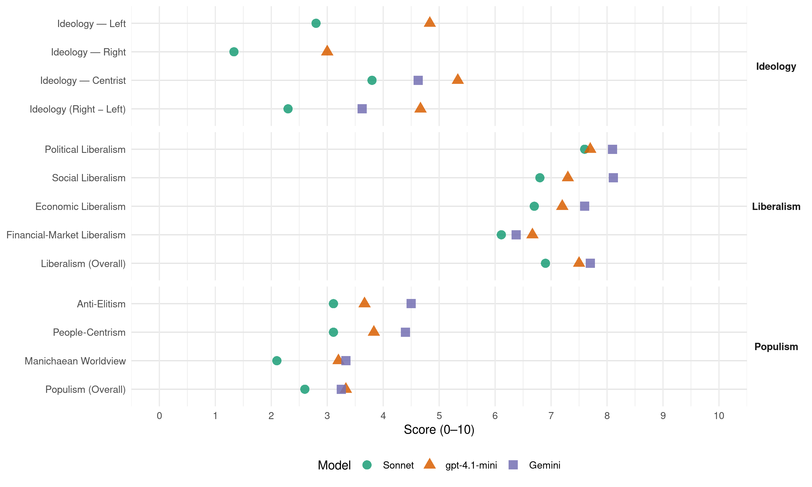

C’s (Spain, 2015)
manifesto_id 33420_201512
Get full text: This site shows derived annotations and short verbatim quotes only. The full manifesto text is © Manifesto Project / WZB — obtain it via manifesto-project.wzb.eu using the manifesto_id above.
Headline scores
| Dimension | Sonnet | gpt-4.1-mini | Gemini |
|---|---|---|---|
| Populism (Overall) | 2.6 | 3.3 | 3.2 |
| Anti-Elitism | 3.1 | 3.7 | 4.5 |
| People-Centrism | 3.1 | 3.8 | 4.4 |
| Manichaean Worldview | 2.1 | 3.2 | 3.3 |
| Ideology (Right − Left) | 2.3 | 4.7 | 3.6 |
| Liberalism (Overall) | 6.9 | 7.5 | 7.7 |
| Political Liberalism | 7.6 | 7.7 | 8.1 |
| Social Liberalism | 6.8 | 7.3 | 8.1 |
| Economic Liberalism | 6.7 | 7.2 | 7.6 |
| Financial-Market Liberalism | 6.1 | 6.7 | 6.4 |
Evidence per dimension
Economic Liberalism
Gemini · score 7.0 · verified · chunk 1
“garantice la igualdad de oportunidades”
crecimiento de las empresas en un mercado transparente, que garantice la igualdad de oportunidades.
Gemini · score 9.0 · verified · chunk 2
“La libre empresa y la iniciativa privada son los pilares”
La libre empresa y la iniciativa privada son los pilares de la riqueza de las naciones y del bienestar de los ciudadanos; pero hay que evitar que una economía de mercado degenere en el “capitalismo de amiguetes”
Gemini · score 8.0 · verified · chunk 3
“incrementar la competencia entre operadores”
Pondremos en marcha una actuación decidida para incrementar la competencia entre operadores. Obligaremos a los operadores existentes a vender a operadores extranjeros
Gemini · score 7.0 · verified · chunk 4
“necesidades reales de nuesfras empresas”
de forma desordenada y sin recursos, dándole la espalda a las necesidades reales de nuesfras empresas.
Gemini · score 7.0 · verified · chunk 5
“normas sanitarias y de competencia”
Eso significa respetar y cumplir las normas sanitarias y de competencia españolas y europeas e Implica
Gemini · score 7.0 · verified · chunk 6
“promoviendo el espíritu emprendedor y el talento”
la inmigración de forma explícita desde un planteamiento proactivo, promoviendo el espíritu emprendedor y el talento, sin que el permiso
Gemini · score 9.0 · verified · chunk 7
“dejar el máximo espacio posible a la iniciativa privada”
Para que el mercado funcione, es necesario dejar el máximo espacio posible a la iniciativa privada, pero dentro de unas reglas de juego
Gemini · score 7.0 · verified · chunk 8
“acuerdo de libre comercio”
partidarios a cualquier costa del Tratado y los que se oponen únicamente por tratarse de un acuerdo de libre comercio. De hecho, el Parlamento Europeo, con especial
Gemini · score 8.0 · verified · chunk 9
“favorecer la competencia entre entidades”
ficheros de solvencia positivos para favorecer la competencia entre entidades. Las personas en especiales circunstancias
Gemini · score 7.0 · verified · chunk 10
“colaboración público-privada en servicios auxiliares”
funciones de ámbito policial, impulsandomecanismos de colaboración público-privada en servicios auxiliares para laoptimización del cuerpo policial
gpt-4.1-mini · score 7.0 · verified · chunk 1
“el mercado debe estar al servicio de los ciudadanos y de los consumidores”
El mercado debe estar al servicio de los ciudadanos y de los consumidores. Haremos las reformas necesarias para asegurar la competencia en los mercados, destruiremos los cárteles y acabaremos con el capitalismo de amiguetes.
gpt-4.1-mini · score 7.0 · verified · chunk 2
“libre empresa y la iniciativa privada son los pilares”
…La libre empresa y la iniciativa privada son los pilares de la riqueza de las naciones y del bienestar de los ciudadanos; pero hay que evitar que una economía de mercado degenere en el “capitalismo de amiguetes”…
gpt-4.1-mini · score 7.0 · verified · chunk 3
“crecimiento económico”
…todo nuestro programa económico está diseñado para asegurar un crecimiento económico (aumento del PIB, el denominador) de calidad, con mejores instituciones y basado en la innovación y el capital humano. En primer lugar, las mejoras en el mercado laboral, enmarcadas en nuestra primera tanda de propuestas, aumentarán la inversión en capital humano de empresarios y trabajadores y disminuirán la rotación, lo que contribuirá a la creación de empleo.
gpt-4.1-mini · score 7.0 · verified · chunk 4
“libre competencia, financiación por objetivos, becas de excelencia”
Las universidades se financiarán a través de: Tasas universitarias, reguladas por las CCAA en coordinación con el Estado, siguiendo el principio de que cualquier Incremento de tasas debe Ir acompañado de un Incremento de becas que garantice la Igualdad de oportunidades a quienes se lo merezcan y las aprovechen. Contribución adicional a través de un programa de becarios de excelencia matriculados. Financiación por objetivos, basada en su especialización y en una evaluación externa y objetivable de la universidad y sus centros.
gpt-4.1-mini · score 8.0 · verified · chunk 5
“financiación por objetivos, basada en su especialización y en una evaluación externa y objetivable de la universidad”
Financiación por objetivos, basada en su especlallzaclón y en una evaluación externa y objetlvable de la universidad y sus centros. Financiación adicional basada en el Impacto Internacional de la Investigación de sus centros o departamentos (que debe ser mayorltarlamente destinada a ellos). Otras formas de financiación externa: fondos competitivos (overheads); contratos de colaboración (regulados), etc.
gpt-4.1-mini · score 7.0 · verified · chunk 6
“Disminuiremos la precariedad laboral mediante la introducción de un contrato único (o unificado) indefinido”
Disminuiremos la precariedad laboral mediante la introducción de un contrato único (o unificado) indefinido. La característica clave de este contrato es el aumento gradual de las indemnizaciones por despido procedente o improcedente.
gpt-4.1-mini · score 7.0 · verified · chunk 7
“libre empresa y la iniciativa privada son los pilares de la riqueza”
La libre empresa y la iniciativa privada son los pilares de la riqueza de las naciones y del bienestar de los ciudadanos; pero hay que evitar que una economía de mercado degenere en el “capitalismo de amiguetes”
gpt-4.1-mini · score 8.0 · verified · chunk 8
“la competitividad y la creación de empleo”
Ciudadanos se compromete a impulsar iniciativas en el ámbito europeo conducentes a la lucha contra la desigualdad y la pobreza, y la creación de empleo de calidad. Propuestas:Promover el aumento de la coordinación fiscal y macroeconómica en el seno del Eurogrupo, que se ha de responsabilizar de la supervisión de los presupuestos nacionales en favor de los equilibrios presupuestarios y de las políticas fiscales y macroeconómicas responsables para el mantenimiento de nuestro sistema de bienestar.
gpt-4.1-mini · score 8.0 · verified · chunk 9
“promoción de la investigación en esta materia en centros de investigación, universidades y tejido empresarial”
Impulsaremos el l+D+i en el sector de las infraestructuras y transportes. Se efectuará la promoción de la investigación en esta materia en centros de investigación, universidades y tejido empresarial, mediante un programa nacional específico de financiación público-privada orientado a la transferencia tecnológica y a la gestión del conocimiento en el sector,
gpt-4.1-mini · score 6.0 · verified · chunk 10
“Reforma Fiscal Verde solicitada por la OCDE”
…solicitaremos que se acometa la Reforma Fiscal Verde solicitada por la OCDE, en la que se perfeccione el “uso de los impuestos relacionados con el medio ambiente…
Sonnet · score 7.0 · verified · chunk 1
“asegurar la competencia en los mercados”
El mercado debe estar al servicio de los ciudadanos y de los consumidores. Haremos las reformas necesarias para asegurar la competencia en los mercados, destruiremos los cárteles y acabaremos con el capitalismo de amiguetes.
Sonnet · score 8.0 · verified · chunk 2
“libre empresa y la iniciativa privada”
La libre empresa y la iniciativa privada son los pilares de la riqueza de las naciones y del bienestar de los ciudadanos
Sonnet · score 7.0 · verified · chunk 3
“incrementar la competencia entre operadores”
Pondremos en marcha una actuación decidida para incrementar la competencia entre operadores
Sonnet · score 7.0 · verified · chunk 4
“régimen de módulos solo para las empresas cuyos clientes principales sean consumidores finales”
conservaremos el régimen de módulos solo para las empresas cuyos clientes principales sean consumidores finales. En particular restringiremos el régimen de módulos a aquellos pequeños empresarios que facturan como mínimo un 75% de sus operaciones a consumidor final
Sonnet · score 6.0 · verified · chunk 5
“desgravaciones fiscales, junto con acciones complementarias”
Estimular la cooperación científica y técnica en l+D entre el sector empresarial con los entes públicos, mediante desgravaciones fiscales, junto con acciones complementarias de financiación
Sonnet · score 6.0 · verified · chunk 6
“favorecer la iniciativa individual y una economía sana”
Y también, un buen gobierno, debe favorecer la iniciativa individual y una economía sana y dinámica. Esos son los pilares del buen gobierno que queremos (re)construir.
Sonnet · score 7.0 · verified · chunk 7
“libre empresa y la iniciativa privada”
su firme defensa de la economía de mercado, la libertad de empresa y la iniciativa privada a través de sus diputados y representantes políticos
Sonnet · score 7.0 · verified · chunk 8
“apertura del mercado estadounidense”
servicios financieros, jurídicos o de telecomunicaciones se verían favorecidos por la apertura del mercado estadounidense
Sonnet · score 6.0 · verified · chunk 9
“Liberalización y competencia”
Liberalización y competencia. Impedir que las empresas de generación, distribución y comercialización, provenientes de los antiguos monopolios, continúen formando parte de un mismo grupo empresarial
Sonnet · score 6.0 · verified · chunk 10
“Reforma Fiscal Verde solicitada por la OCDE”
solicitaremos que se acometa la Reforma Fiscal Verde solicitada por la OCDE, en la que se perfeccione el uso de los impuestos relacionados con el medio ambiente
Financial-Market Liberalism
Gemini · score 8.0 · verified · chunk 2
“el que mayor dinero tiene para Capital Riesgo”
Es el país con mayor número de empresas en el NASDAQ americano fuera de EEUU, el que mayor dinero tiene para Capital Riesgo como proporción del PIB, el que más gasta en Investigación y desarrollo3.
Gemini · score 7.0 · verified · chunk 3
“ofrecer productos opacos en territorios offshore”
Tipificaremos como delito autónomo el diseño específico en el mercado de productos, especialmente financieros, diseñados para defraudar, así como la actividad comercial de ofrecer productos opacos en territorios offshore.
Gemini · score 5.0 · verified · chunk 4
“productos, especialmente financieros, diseñados para defraudar”
Tipificaremos como delito autónomo el diseño específico en el mercado de productos, especialmente financieros, diseñados para defraudar
Gemini · score 6.0 · verified · chunk 5
“concesión de microcréditos por parte de estas entidades”
inyección de fondos públicos para impulsar la concesión de microcréditos por parte de estas entidades a autónomos y proyectos
Gemini · score 4.0 · verified · chunk 6
“expropiación forzosa a la entidad financiera”
emergencia social podrán ser beneficiarías de la expropiación forzosa a la entidad financiera del uso de la vivienda duranfe un plazo
Gemini · score 8.0 · verified · chunk 7
“convertir la Comisión Nacional del Mercado de Valores”
supervisión de los mercados financieros, adoptar el modelo de “doble vértice” (twin peaks) y convertir la Comisión Nacional del Mercado de Valores (CNMV) en una
Gemini · score 6.0 · verified · chunk 8
“servicios financieros, jurídicos o de telecomunicaciones”
agroalimentación, textil, servicios financieros, jurídicos o de telecomunicaciones se verían favorecidos por la apertura del mercado
Gemini · score 7.0 · verified · chunk 9
“riesgos que el mercado financiero privado”
rentabilidad económica a corto plazo, asumiendo riesgos que el mercado financiero privado no está dispuesto a asumir.
gpt-4.1-mini · score 7.0 · verified · chunk 1
“reforzar la aplicación de la Ley Orgánica 2/2012, de 27 de abril, de Estabilidad Presupuestaria”
Reforzar la aplicación de la Ley Orgánica 2/2012, de 27 de abril, de Estabilidad Presupuestaria y Sostenibilidad Financiera. Su aplicación no puede quedar en manos de la discrecionalidad política del Gobierno. La estabilidad es un objetivo constitucional que cuenta con una autoridad, la Autoridad Independiente de Responsabilidad Fiscal,
gpt-4.1-mini · score 6.0 · verified · chunk 3
“Agencia Tributaria”
…Devolveremos su independencia, profesionalidad, y calidad a la agencia tributaria e incrementando sustancialmente sus recursos: duplicaremos el número de funcionarios: inspectores, técnicos y personal de apoyo, una medida que no solo no costará dinero sino que generará nuevos recursos: en 2013 la Agencia Tributaria tuvo un presupuesto de 1313 millones de euros. Con este presupuesto, en lucha contra el fraude la Agencia Tributaria consiguió 10.91 millones de euros. Esto supone una rentabilidad directa de 8 euros por cada euro invertido, además del efecto inducido.
gpt-4.1-mini · score 7.0 · verified · chunk 5
“introducción de un nivel de tasas y matrículas diferencial y elevado para estudiantes de fuera de la UE”
Para cubrir los costes más elevados de los estudiantes extra— europeos, y dar Incentivos a las universidades para que desarrollen servicios especializados para estos estudiantes, es necesario Introducir un nivel de tasas y matrículas diferencial y elevado para estudiantes de fuera de la UE, como existe por ejemplo en el Reino Unido.
gpt-4.1-mini · score 6.0 · verified · chunk 6
“Impulsar convenios entre las Administraciones públicas y las entidades financieras que han recibido inyección de fondos públicos”
Crearemos un programa específico de apoyo a los jóvenes emprendedores y empresarios. Impulsar convenios entre las Administraciones públicas y las entidades financieras que han recibido inyección de fondos públicos para impulsar la concesión de microcréditos.
gpt-4.1-mini · score 7.0 · verified · chunk 7
“Convertir la Comisión Nacional del Mercado de Valores (CNMV) en una Comisión Nacional de los Mercados Financieros”
Convertir la Comisión Nacional del Mercado de Valores (CNMV) en una Comisión Nacional de los Mercados Financieros (CNMF] Otros países —como los Estados Unidos o el Reino Unido— no vivieron episodios tan graves de comercialización inadecuada de productos financieros (mis-selling) como los ocurridos en España, pero han sacado de la crisis financiera una conclusión inequívoca: hay que atribuir a dos instituciones distintas la supervisión de la solvencia de las entidades financieras y la protección de los consumidores financieros e integridad de los mercados, para evitar los conflictos de interés que puede suscitar que una misma institución pública sea responsable de ambas funciones.
gpt-4.1-mini · score 7.0 · verified · chunk 8
“la promoción de profesionales en puestos de responsabilidad”
Establecer un plan de acción para mejorar la influencia española en los organismos multilaterales financieros a través de la promoción de profesionales en puestos de responsabilidad y el desarrollo de una estrategia de actuación consensuada y coherente con los objetivos españoles en dichas instituciones.
Sonnet · score 6.0 · verified · chunk 1
“los bancos del norte prestaron de forma excesiva”
Los bancos del norte prestaron de forma excesiva sin preocuparse demasiado de que sus créditos fueran devueltos. Ahora es responsabilidad de todos responder al legado de la crisis.
Sonnet · score 7.0 · verified · chunk 2
“fondos de inversión públicos de match funding”
Creación de fondos de inversión públicos de match funding para sectores estratégicos. Fondos que coinviertan con capital especializado
Sonnet · score 6.0 · verified · chunk 3
“apertura de las SICAV”
Devolveremos el control fiscal de las SICAV a la Inspección de Hacienda y promoveremos la apertura de las SICAV, de tal forma que cualquier ciudadano pueda invertir
Sonnet · score 6.0 · verified · chunk 4
“Tipificaremos como delito autónomo el diseño específico en el mercado de productos, especialmente financieros, diseñados para defraudar”
Tipificaremos como delito autónomo el diseño específico en el mercado de productos, especialmente financieros, diseñados para defraudar, así como la actividad comercial de ofrecer productos opacos en territorios offshore.
Sonnet · score 6.0 · verified · chunk 5
“microcréditos por parte de estas entidades a autónomos”
Impulsar convenios entre las Administraciones públicas y las entidades financieras que han recibido inyección de fondos públicos para impulsar la concesión de microcréditos por parte de estas entidades a autónomos y proyectos empresariales de jóvenes
Sonnet · score 5.0 · verified · chunk 6
“Eliminar la cláusula suelo en los contratos”
Ciudadanos está en contra de las clausulas suelo en los contratos de préstamos porque son abusivas y suponen un beneficio adicional para los bancos y un perjuicio para los clientes
Sonnet · score 7.0 · verified · chunk 7
“supervisión de los mercados financieros”
En materia de supervisión de los mercados financieros, adoptar el modelo de “doble vértice” (twin peaks) y convertir la Comisión Nacional del Mercado de Valores
Sonnet · score 6.0 · verified · chunk 8
“servicios financieros”
Sectores como energía, construcción, infraestructuras, transporte, agroalimentación, textil, servicios financieros, jurídicos o de telecomunicaciones se verían favorecidos por la apertura del mercado estadounidense
Sonnet · score 6.0 · verified · chunk 9
“ficheros de solvencia positivos para favorecer la competencia”
Se regularán de manera efectiva los ficheros de solvencia positivos para favorecer la competencia entre entidades
Political Liberalism
Gemini · score 8.0 · verified · chunk 1
“asentó firmemente un Estado democrático de derecho”
la Constitución de 1978 ha sido un indudable éxito son evidentes y sobradamente conocidas: asentó firmemente un Estado democrático de derecho tras años de
Gemini · score 8.0 · verified · chunk 2
“Sin instituciones fuertes e independientes, cualquier cambio legislativo será puro papel mojado”
Acabar con el capitalismo de amiguetes requiere importantes cambios legislativos y regulatorios. Pero requiere también un cambio radical de valores y actitudes en nuestras clases dirigentes y en nuestra opinión pública que haga que las instituciones encargadas de velar por el cumplimiento de la ley funcione. Sin instituciones fuertes e independientes, cualquier cambio legislativo será puro papel mojado.
Gemini · score 8.0 · verified · chunk 3
“defender el Estado de derecho”
Las funciones básicas de nuestro Estado del bienestar deben ser asegurar la seguridad externa e interna, defender el Estado de derecho y el acceso de todos
Gemini · score 8.0 · verified · chunk 4
“derechos y deberes constitucionales”
Dar una especial Importancia al estudio de los derechos y deberes constitucionales cuyo estudio entendemos que debería ser obligatorio
Gemini · score 8.0 · verified · chunk 5
“mecanismos de control democrático”
la detección del error son claves a la hora de entender los mecanismos de control democrático. Según recientes encuestas
Gemini · score 8.0 · verified · chunk 6
“valores sociales, democráticos y de convivencia”
nuestros niños y adolescentes en valores mediante una educación que potencie personas en plenitud y con valores sociales, democráticos y de convivencia.
Gemini · score 9.0 · verified · chunk 7
“reforzar la independencia judicial, despolitizando y profesionalizando su funcionamiento”
La mejora de justicia en España pasa sin duda por reforzar la independencia judicial, despolitizando y profesionalizando su funcionamiento. Para C’s es fundamental
Gemini · score 8.0 · verified · chunk 8
“principios de democracia y respeto a los derechos humanos”
de la UE no puede impedir una acción exterior coherente con los principios de democracia y respeto a los derechos humanos en el mundo. Tampoco la falta de mecanismos
Gemini · score 8.0 · verified · chunk 9
“derecho fundamental en todo ordenamiento democrático”
La seguridad es un derecho fundamental en todo ordenamiento democrático. La falta de seguridad pone en riesgo
Gemini · score 8.0 · verified · chunk 10
“un sistema democrático y de derecho”
obligación primordial para cualquier gobierno en un sistema democrático y de derecho. La seguridad es imprescindible para gozar
gpt-4.1-mini · score 8.0 · verified · chunk 1
“un Estado democrático de derecho tras años de dictadura”
Las razones por las que la Constitución de 1978 ha sido un indudable éxito son evidentes y sobradamente conocidas: asentó firmemente un Estado democrático de derecho tras años de dictadura, permitió que en el nuevo marco jurídico que establecía se reformara toda la legislación interna para adecuarla a sus principios y reglas,
gpt-4.1-mini · score 7.0 · verified · chunk 2
“instituciones encargadas de velar por el cumplimiento de la ley”
…Sin instituciones fuertes e independientes, cualquier cambio legislativo será puro papel mojado.
gpt-4.1-mini · score 7.0 · verified · chunk 3
“democracia”
…asegurar la sostenibilidad de los pilares básicos del estado de bienestar: sanidad, educación y pensiones. Las propuestas que presentamos en educación e instituciones, también estarán destinadas a aumentar el crecimiento a largo plazo de nuestra economía. Priorizar el gasto: se trata de invertir mejor, pensando en el futuro, no simplemente de gastar. No podemos determinar cuál tiene que ser el nivel de ingresos necesario sin empezar por saber qué gasto es necesario y cuál es superfluo ¿Cuál es el nivel de gasto público que queremos y podemos permitirnos? ¿Cuáles son las partidas en las que se pueden aplicar recortes del gasto por duplicidades y deficiencias?
gpt-4.1-mini · score 8.0 · verified · chunk 4
“derechos y libertades fundamentales”
De acuerdo con el artículo 27.2 de la Constitución Española “La educación tendrá por objeto el pleno desarrollo de la personalidad humana en el respeto a los principios democráticos de convivencia y a los derechos y libertades fundamentales”.
gpt-4.1-mini · score 8.0 · verified · chunk 5
“la epistemología científica y la detección del error son claves a la hora de entender los mecanismos de control democrático”
la ciencia, en su objetivo de búsqueda de la verdad, se sitúa en el extremo opuesto a los dogmatismos y a la corrupción, además de que la epistemología científica y la detección del error son claves a la hora de entender los mecanismos de control democrático. Según recientes encuestas realizadas en nuestro país, un 20% de los españoles piensa que el Sol gira alrededor de la Tierra y un porcentaje todavía superior consulta a “videntes” o siguen el tarot.
gpt-4.1-mini · score 8.0 · verified · chunk 6
“Consagrar el derecho de acceso a la información pública como un derecho fundamental”
La Ley de Transparencia y Buen Gobierno Estatal son sólo un primer paso en esta dirección pero se quedan muy cortas. Consagrar el derecho de acceso a la información pública como un derecho fundamental.
gpt-4.1-mini · score 8.0 · verified · chunk 7
“la democracia interna, la transparencia financiera y la rendición de cuentas”
Se propone una reforma de la legislación sobre Partidos Políticos para garantizar la democracia interna, la transparencia financiera y la rendición de cuentas: Funcionamiento interno democrático Sistema de primarias para la elección de los candidatos que garantice la igualdad entre los mismos, sin excesivo número de avales u otras trabas orgánicas.
gpt-4.1-mini · score 9.0 · verified · chunk 8
“la difusión de valores democráticos y de convivencia”
RTVE debería trabajar por la vertebración del país, la difusión de valores democráticos y de convivencia: garantizar la expresión de toda nuestra diversidad cultural, colaborar en el desarrollo del pensamiento críticos de la audiencia haciendo una información independiente; programar un entretenimiento equilibrado, en especial para niños y jóvenes que promueva la motivación para el estudio, el acercamiento a la cultura y la solidaridad; estrechar lazos de hermanamiento con la comunidad hispana global; liderar la innovación en contenidos audiovisuales y ser el motor de la industria audiovisual del país
gpt-4.1-mini · score 7.0 · verified · chunk 9
“la legislación vigente, mediante medidas de uso de tecnologías de información y comunicación”
Se reforzará lo dispuesto en la legislación vigente, mediante medidas de uso de tecnologías de información y comunicación [TIC], donde se dará máxima accesibilidad a la información de estas acciones, realizando propuestas entendibles para el público en general, mediante infografías e imágenes en 3D.
gpt-4.1-mini · score 7.0 · verified · chunk 10
“la transparencia, acceso a la información pública y del buen gobierno”
…de transparencia, acceso a la información pública y del buen gobierno. Revisaremos la adecuación de los procesos de ascenso y promoción Interna…
Sonnet · score 8.0 · verified · chunk 1
“asentó firmemente un Estado democrático de derecho”
Las razones por las que la Constitución de 1978 ha sido un indudable éxito son evidentes: asentó firmemente un Estado democrático de derecho tras años de dictadura, permitió que en el nuevo marco jurídico que establecía se reformara toda la legislación interna
Sonnet · score 8.0 · verified · chunk 2
“instituciones fuertes e independientes”
Sin instituciones fuertes e independientes, cualquier cambio legislativo será puro papel mojado
Sonnet · score 7.0 · verified · chunk 3
“independencia de la Autoridad Independiente de Responsabilidad Fiscal”
Aseguraremos la total independencia de la Autoridad Independiente de Responsabilidad Fiscal (AIREF), que vigila las políticas fiscales
Sonnet · score 7.0 · verified · chunk 4
“respeto a los principios democráticos de convivencia y a los derechos y libertades fundamentales”
De acuerdo con el artículo 27.2 de la Constitución Española ‘La educación tendrá por objeto el pleno desarrollo de la personalidad humana en el respeto a los principios democráticos de convivencia y a los derechos y libertades fundamentales’
Sonnet · score 7.0 · verified · chunk 5
“principios constitucionales de Igualdad, mérito y capacidad”
elegirán mediante un procedimiento público, abierto y transparente con participación de representantes sociales y garantizando los principios constitucionales de Igualdad, mérito y capacidad
Sonnet · score 8.0 · verified · chunk 6
“democracia interna, la transparencia financiera”
Se propone una reforma de la legislación sobre Partidos Políticos para garantizar la democracia interna, la transparencia financiera y la rendición de cuentas
Sonnet · score 8.0 · verified · chunk 7
“independencia del Poder Judicial”
la mejora de justicia en España pasa sin duda por reforzar la independencia judicial, despolitizando y profesionalizando su funcionamiento
Sonnet · score 8.0 · verified · chunk 8
“difusión de valores democráticos y de convivencia”
La RTVE debería trabajar por la vertebración del país, la difusión de valores democráticos y de convivencia: garantizar la expresión de toda nuestra diversidad cultural
Sonnet · score 7.0 · verified · chunk 9
“independencia a las grandes empresas del estado”
Se deberá, de forma complementaria, dotar de independencia a las grandes empresas del estado en el sector, despolitizando sus órganos de decisión
Sonnet · score 8.0 · verified · chunk 10
“La seguridad es un derecho fundamental en todo ordenamiento democrático”
La falta de seguridad pone en riesgo otros derechos fundamentales, como la libertad e incluso la propia vida
Liberalism (Overall)
Gemini · score 8.0 · verified · chunk 1
“asentó firmemente un Estado democrático de derecho”
la Constitución de 1978 ha sido un indudable éxito son evidentes y sobradamente conocidas: asentó firmemente un Estado democrático de derecho tras años de
Gemini · score 8.0 · verified · chunk 2
“La libre empresa y la iniciativa privada son los pilares”
La libre empresa y la iniciativa privada son los pilares de la riqueza de las naciones y del bienestar de los ciudadanos; pero hay que evitar que una economía de mercado degenere en el “capitalismo de amiguetes”
Gemini · score 8.0 · verified · chunk 3
“defender el Estado de derecho”
Las funciones básicas de nuestro Estado del bienestar deben ser asegurar la seguridad externa e interna, defender el Estado de derecho y el acceso de todos
Gemini · score 7.0 · verified · chunk 4
“derechos y deberes constitucionales”
Dar una especial Importancia al estudio de los derechos y deberes constitucionales cuyo estudio entendemos que debería ser obligatorio
Gemini · score 7.0 · verified · chunk 5
“mecanismos de control democrático”
la detección del error son claves a la hora de entender los mecanismos de control democrático. Según recientes encuestas
Gemini · score 7.0 · verified · chunk 6
“valores sociales, democráticos y de convivencia”
nuestros niños y adolescentes en valores mediante una educación que potencie personas en plenitud y con valores sociales, democráticos y de convivencia.
Gemini · score 9.0 · verified · chunk 7
“dejar el máximo espacio posible a la iniciativa privada”
Para que el mercado funcione, es necesario dejar el máximo espacio posible a la iniciativa privada, pero dentro de unas reglas de juego
Gemini · score 7.0 · verified · chunk 8
“principios de democracia y respeto a los derechos humanos”
de la UE no puede impedir una acción exterior coherente con los principios de democracia y respeto a los derechos humanos en el mundo. Tampoco la falta de mecanismos
Gemini · score 8.0 · verified · chunk 9
“favorecer la competencia entre entidades”
ficheros de solvencia positivos para favorecer la competencia entre entidades. Las personas en especiales circunstancias
Gemini · score 8.0 · verified · chunk 10
“un sistema democrático y de derecho”
obligación primordial para cualquier gobierno en un sistema democrático y de derecho. La seguridad es imprescindible para gozar
gpt-4.1-mini · score 8.0 · verified · chunk 1
“un Estado democrático de derecho tras años de dictadura”
Las razones por las que la Constitución de 1978 ha sido un indudable éxito son evidentes y sobradamente conocidas: asentó firmemente un Estado democrático de derecho tras años de dictadura, permitió que en el nuevo marco jurídico que establecía se reformara toda la legislación interna para adecuarla a sus principios y reglas,
gpt-4.1-mini · score 7.0 · verified · chunk 2
“instituciones encargadas de velar por el cumplimiento de la ley”
…Sin instituciones fuertes e independientes, cualquier cambio legislativo será puro papel mojado.
gpt-4.1-mini · score 7.0 · verified · chunk 3
“crecimiento económico”
…todo nuestro programa económico está diseñado para asegurar un crecimiento económico (aumento del PIB, el denominador) de calidad, con mejores instituciones y basado en la innovación y el capital humano. En primer lugar, las mejoras en el mercado laboral, enmarcadas en nuestra primera tanda de propuestas, aumentarán la inversión en capital humano de empresarios y trabajadores y disminuirán la rotación, lo que contribuirá a la creación de empleo.
gpt-4.1-mini · score 8.0 · verified · chunk 4
“derechos y libertades fundamentales”
De acuerdo con el artículo 27.2 de la Constitución Española “La educación tendrá por objeto el pleno desarrollo de la personalidad humana en el respeto a los principios democráticos de convivencia y a los derechos y libertades fundamentales”.
gpt-4.1-mini · score 8.0 · verified · chunk 5
“la epistemología científica y la detección del error son claves a la hora de entender los mecanismos de control democrático”
la ciencia, en su objetivo de búsqueda de la verdad, se sitúa en el extremo opuesto a los dogmatismos y a la corrupción, además de que la epistemología científica y la detección del error son claves a la hora de entender los mecanismos de control democrático. Según recientes encuestas realizadas en nuestro país, un 20% de los españoles piensa que el Sol gira alrededor de la Tierra y un porcentaje todavía superior consulta a “videntes” o siguen el tarot.
gpt-4.1-mini · score 8.0 · verified · chunk 6
“Consagrar el derecho de acceso a la información pública como un derecho fundamental”
La Ley de Transparencia y Buen Gobierno Estatal son sólo un primer paso en esta dirección pero se quedan muy cortas. Consagrar el derecho de acceso a la información pública como un derecho fundamental.
gpt-4.1-mini · score 7.0 · verified · chunk 7
“la democracia interna, la transparencia financiera y la rendición de cuentas”
Se propone una reforma de la legislación sobre Partidos Políticos para garantizar la democracia interna, la transparencia financiera y la rendición de cuentas: Funcionamiento interno democrático Sistema de primarias para la elección de los candidatos que garantice la igualdad entre los mismos, sin excesivo número de avales u otras trabas orgánicas.
gpt-4.1-mini · score 8.0 · verified · chunk 8
“la difusión de valores democráticos y de convivencia”
RTVE debería trabajar por la vertebración del país, la difusión de valores democráticos y de convivencia: garantizar la expresión de toda nuestra diversidad cultural, colaborar en el desarrollo del pensamiento críticos de la audiencia haciendo una información independiente; programar un entretenimiento equilibrado, en especial para niños y jóvenes que promueva la motivación para el estudio, el acercamiento a la cultura y la solidaridad; estrechar lazos de hermanamiento con la comunidad hispana global; liderar la innovación en contenidos audiovisuales y ser el motor de la industria audiovisual del país
gpt-4.1-mini · score 7.0 · verified · chunk 9
“protección de los ciudadanos. Aire y agua limpios. Control de los residuos. Prevención del ruido.”
Salud y bienestar: protección de los ciudadanos. Aire y agua limpios. Control de los residuos. Prevención del ruido. Protección de los espacios verdes y ecosistemas.
gpt-4.1-mini · score 7.0 · verified · chunk 10
“Reforma Fiscal Verde solicitada por la OCDE”
…solicitaremos que se acometa la Reforma Fiscal Verde solicitada por la OCDE, en la que se perfeccione el “uso de los impuestos relacionados con el medio ambiente…
Sonnet · score 7.0 · verified · chunk 1
“un Estado democrático de derecho”
Las razones por las que la Constitución de 1978 ha sido un indudable éxito son evidentes: asentó firmemente un Estado democrático de derecho tras años de dictadura
Sonnet · score 7.0 · verified · chunk 2
“libre empresa y la iniciativa privada”
La libre empresa y la iniciativa privada son los pilares de la riqueza de las naciones y del bienestar de los ciudadanos
Sonnet · score 7.0 · verified · chunk 3
“sostenibilidad y eficiencia de las finanzas públicas”
Nuestro objetivo es asegurar la sostenibilidad y eficiencia de las finanzas públicas: control del gasto público, eficiencia y equidad
Sonnet · score 7.0 · verified · chunk 4
“derechos y libertades fundamentales”
el pleno desarrollo de la personalidad humana en el respeto a los principios democráticos de convivencia y a los derechos y libertades fundamentales
Sonnet · score 7.0 · verified · chunk 5
“principios constitucionales de Igualdad, mérito y capacidad”
elegirán mediante un procedimiento público, abierto y transparente con participación de representantes sociales y garantizando los principios constitucionales de Igualdad, mérito y capacidad
Sonnet · score 7.0 · verified · chunk 6
“igualdad de oportunidades, capacidad y mérito”
Defendemos el principio de igualdad de oportunidades, capacidad y mérito como las mejores herramientas para combatir la discriminación entre las personas.
Sonnet · score 7.0 · verified · chunk 7
“economía de mercado, la libertad de empresa”
su firme defensa de la economía de mercado, la libertad de empresa y la iniciativa privada a través de sus diputados y representantes políticos
Sonnet · score 7.0 · verified · chunk 8
“democracias liberales puedan tener una influencia decisiva”
acuerdo que actualmente negocia la Unión Europea con Estados Unidos, y que es una oportunidad para que las democracias liberales puedan tener una influencia decisiva en gobernanza global
Sonnet · score 6.0 · verified · chunk 9
“Liberalización y competencia”
Liberalización y competencia. Impedir que las empresas de generación, distribución y comercialización continúen formando parte de un mismo grupo empresarial
Sonnet · score 7.0 · verified · chunk 10
“La seguridad es un derecho fundamental en todo ordenamiento democrático”
La falta de seguridad pone en riesgo otros derechos fundamentales, como la libertad e incluso la propia vida
Anti-Elitism
Gemini · score 6.0 · verified · chunk 1
“la partitocracia como degeneración de la democracia”
los hemos agrupado os agruparlos en dos grandes grupos: primero, la partitocracia como degeneración de la democracia, y, segundo, una organización
Gemini · score 6.0 · verified · chunk 2
“evitar que una economía de mercado degenere en el”capitalismo de amiguetes”“
libre empresa y la iniciativa privada son los pilares de la riqueza de las naciones y del bienestar de los ciudadanos; pero hay que evitar que una economía de mercado degenere en el “capitalismo de amiguetes”, corroído por los pactos colusorios entre empresarios, o por sus oscuros acuerdos o tejemanejes con los políticos
Gemini · score 3.0 · verified · chunk 3
“nido de corrupción sin control democrático”
eliminación de las diputaciones provinciales, de dudosa utilidad y que además han sido un nido de corrupción sin control democrático. Además fusionaremos
Gemini · score 4.0 · verified · chunk 4
“incompetencia de muchos gestores seleccionados”
la miopía del corto plazo, la incompetencia de muchos gestores seleccionados a menudo más por motivos políticos que de mérito
Gemini · score 3.0 · verified · chunk 5
“eviten todo tipo de Injerencia improcedente”
dar participación a la sociedad civil, pero con medidas (“anti Cajas de Ahorro”) que eviten todo tipo de Injerencia improcedente: “la pertenencia al Consejo
Gemini · score 4.0 · verified · chunk 6
“desmontar este modelo clientelar”
recoger se recogen no es otro que el de contribuir a desmontar este modelo clientelar que se ha ido asentando en las distintas instituciones
Gemini · score 6.0 · verified · chunk 7
“evitando las ventajas informativas e incluso”posición dominante” del Gobierno”
revitalizar la función del Parlamento, a mitigar las ventajas informativas e incluso “posición dominante” del Gobierno y a facilitar el diálogo
Gemini · score 4.0 · verified · chunk 8
“captura de los instrumentos de acción exterior por intereses partidistas”
ausente en la política exterior de los últimos años: el consenso. La captura de los instrumentos de acción exterior por intereses partidistas y la falta de implicación del Congreso de los Diputados
gpt-4.1-mini · score 3.0 · verified · chunk 1
“la partitocracia como degeneración de la democracia”
los principales problemas los hemos agrupado os agruparlos en dos grandes grupos: primero, la partitocracia como degeneración de la democracia, y, segundo, una organización política y territorial poco funcional.
gpt-4.1-mini · score 2.0 · verified · chunk 2
“capitalismo de amiguetes”
…la libre empresa y la iniciativa privada son los pilares de la riqueza de las naciones y del bienestar de los ciudadanos; pero hay que evitar que una economía de mercado degenere en el “capitalismo de amiguetes”, corroído por los pactos colusorios entre empresarios, o por sus oscuros acuerdos o tejemanejes con los políticos y gobernantes que contratan sus servicios o regulan su actividad.
gpt-4.1-mini · score 2.0 · verified · chunk 3
“los poderes públicos”
…que se aplica por Igual a todos. Una cuestión que hace un enorme daño a la conciencia fiscal es la amnistía fiscal. Mediante este procedimiento, 31.484 defraudadores regularizaron unos 40.000 millones de euros (estimación del Ministerio de Hacienda) pagando 1.193 millones de euros un tipo Inferior al 3%. Con Independencia de que todo esto constituyó una enorme vergüenza, de la que se beneficiaron corruptos muy cercanos al Gobierno del PP (Incluyendo el tesorero del partido), la norma de aprobación, el Real Decreto-Ley 12/2012, preveía un tipo del 10% sin excepciones al Importe de los bienes aflorados. Mediante un Informe de la Dirección General de Tributos, sin firma y que no fue publicado en el BOE, se dejó fuera de tributación el 70% de las rentas afloradas. La opinión generalizada entre los expertos, como los Inspectores de Hacienda, es que el Informe es ¡legal. Por lo tanto, procederemos a anular el Informe y exigir los Importes no Ingresados por los defraudadores acogidos a la amnistía fiscal, antes de que transcurran cuatro años desde que presentaron la declaración. Por este sistema, obtendremos 2.800 millones de euros en 2016. Evidentemente, antes de exigir Impuestos a los contribuyentes cumplidores, que son la inmensa mayoría, hay que exigirles el estricto cumplimiento de las leyes a los defraudadores que se beneficiaron de una tribufación absolufamenfe privilegiada.
gpt-4.1-mini · score 5.0 · verified · chunk 4
“antes de continuar exigiendo más impuestos a los que ya pagan hay que cobrar a los delincuentes”
Obviamente, no tiene sentido que si un contribuyente deja de ingresar una parte del IRPF, o no paga una multa esté embargado en pocos meses, y se tarde una década en cobrar a los delincuentes fiscales. Antes de continuar exigiendo más impuestos a los que ya pagan hay que cobrar a los delincuentes.
gpt-4.1-mini · score 3.0 · verified · chunk 6
“la falta de imparcialidad de los gobernantes: en gran medida se dedicaron a defender sus intereses en detrimento de los de la gran mayoría”
En el núcleo del problema del mal gobierno Español está la falta de imparcialidad de los gobernantes: en gran medida se dedicaron a defender sus intereses en detrimento de los de la gran mayoría. Ahora bien, avanzar hacia ese ideal de buen gobierno al que todas las naciones aspiran no es una tarea nada fácil.
gpt-4.1-mini · score 7.0 · verified · chunk 7
“lucha por los intereses generales, contra”el negocio del conflicto de intereses”“
La lucha por los intereses generales, contra “el negocio del conflicto de intereses” y las puertas giratorias Defender los Intereses generales luchando contra el desvío del ejercicio del poder en beneficio de intereses particulares, evitando en particular los conflictos de Intereses
Sonnet · score 5.0 · mixed · chunk 1
“la partitocracia como degeneración de la democracia”
En Ciudadanos los principales problemas los hemos agrupado os agruparlos en dos grandes grupos: primero, la partitocracia como degeneración de la democracia, y, segundo, una organización política y territorial poco funcional.
Sonnet · score 4.0 · verified · chunk 2
“capitalismo de amiguetes”
hay que evitar que una economía de mercado degenere en el “capitalismo de amiguetes”, corroído por los pactos colusorios entre empresarios, o por sus oscuros acuerdos o tejemanejes con los políticos
Sonnet · score 4.0 · verified · chunk 3
“grupos de interés”
excepciones hechas a la medida de unos u otros grupos de interés. Hay que reformar el sistema impositivo
Sonnet · score 3.0 · verified · chunk 4
“incompetencia de muchos gestores seleccionados a menudo más por motivos políticos”
la falta de un proyecto ambicioso de futuro que permita salir de la miopía del corto plazo, la incompetencia de muchos gestores seleccionados a menudo más por motivos políticos que de mérito, y la prevalencia de los intereses partidistas y gremiales en contra de los del interés general
Sonnet · score 2.0 · verified · chunk 5
“sin ninguna explicación) sus compromisos”
el gobierno español ha empezado a desatender (sin ninguna explicación) sus compromisos con organismos, consorcios e instituciones científicas internacionales
Sonnet · score 4.0 · verified · chunk 6
“se dedicaron a defender sus intereses en detrimento”
En el núcleo del problema del mal gobierno Español está la falta de imparcialidad de los gobernantes: en gran medida se dedicaron a defender sus intereses en detrimento de los de la gran mayoría.
Sonnet · score 5.0 · verified · chunk 7
“capitalismo de amiguetes”
Contra el capitalismo de amiguetes: buena regulación y fomento de la competencia. El capitalismo español se rige por una peculiar “ley del embudo”, que favorece a la bien conectada empresa
Sonnet · score 3.0 · verified · chunk 8
“uso descarado de la potestad para nombrar políticos”
los últimos gobiernos han hecho uso descarado de la potestad para nombrar políticos en embajadas o utilizar puestos relevantes del Estado para los intereses y aspiraciones personales de nuestros ex ministros
Sonnet · score 1.0 · verified · chunk 9
“lobbies tecnológicos”
superando los planteamientos de las “Smart Cities” (compra de tecnología a empresas y lobbies tecnológicos) y centrándose en el talento ciudadano
Sonnet · score 2.0 · verified · chunk 10
“Velaremos por el fomento y el cumplimiento estricto de los principios de mérito y capacidad”
en todos los procesos de Ingreso y ascenso en las FFCCSS del Estado, con criterios de transparencia y participación
Ideology — Centrist
Gemini · score 6.0 · verified · chunk 1
“los ciudadanos son el centro de nuestra actuación”
estatistas de la regeneración que España necesita, en nuestra visión los ciudadanos son el centro de nuestra actuación. Queremos que los ciudadanos
Gemini · score 6.0 · verified · chunk 2
“evitar que una economía de mercado degenere en el”capitalismo de amiguetes”“
libre empresa y la iniciativa privada son los pilares de la riqueza de las naciones y del bienestar de los ciudadanos; pero hay que evitar que una economía de mercado degenere en el “capitalismo de amiguetes”, corroído por los pactos colusorios entre empresarios, o por sus oscuros acuerdos o tejemanejes con los políticos
Gemini · score 4.0 · verified · chunk 3
“reconstruir la clase media trabajadora”
prioridad de todas nuestras propuestas es la puesta en marcha de un modelo de crecimiento sostenido que permita reducir el paro y mejorar nuestras finanzas públicas de forma permanente, así como reconstruir la clase media trabajadora. Existe la percepción
Gemini · score 4.0 · verified · chunk 4
“al servicio de los ciudadanos”
poniendo la Administración, también la tributaria, al servicio de los ciudadanos, que son la mayoría
Gemini · score 3.0 · verified · chunk 5
“eviten todo tipo de Injerencia improcedente”
dar participación a la sociedad civil, pero con medidas (“anti Cajas de Ahorro”) que eviten todo tipo de Injerencia improcedente: “la pertenencia al Consejo
Gemini · score 4.0 · verified · chunk 6
“desmontar este modelo clientelar”
recoger se recogen no es otro que el de contribuir a desmontar este modelo clientelar que se ha ido asentando en las distintas instituciones
Gemini · score 6.0 · verified · chunk 7
“evitar que una economía de mercado degenere en el”capitalismo de amiguetes”“
bienestar de los ciudadanos; pero hay que evitar que una economía de mercado degenere en el “capitalismo de amiguetes”, corroído por los pactos colusorios
Gemini · score 4.0 · verified · chunk 8
“intereses partidistas y la falta de implicación”
exterior de los últimos años: el consenso. La captura de los instrumentos de acción exterior por intereses partidistas y la falta de implicación del Congreso de los Diputados
gpt-4.1-mini · score 6.0 · verified · chunk 1
“consenso constitucional está basado en la idea misma de Constitución”
el consenso constitucional está basado en la idea misma de Constitución, en su carácter de norma estable producto de un acuerdo básico entre fuerzas políticas representativas de amplias mayorías de ciudadanos, y también de significativas minorías, así como de los ciudadanos mismos
gpt-4.1-mini · score 4.0 · verified · chunk 2
“la libre empresa y la iniciativa privada son los pilares”
…La libre empresa y la iniciativa privada son los pilares de la riqueza de las naciones y del bienestar de los ciudadanos; pero hay que evitar que una economía de mercado degenere en el “capitalismo de amiguetes”…
gpt-4.1-mini · score 4.0 · verified · chunk 3
“reforma fiscal”
…Nuestra reforma empezará por aumentar la bases impositivas para al mismo tiempo reducir y simplificar los tipos. Esto incrementará la eficiencia y reducirá las distorsiones del sistema impositivo. Además de los aumentos en la eficiencia que planteamos, nuestra reforma fiscal va a reducir sustancialmente la presión fiscal, a través de una caída de la imposición directa y un importante complemento salarial.
gpt-4.1-mini · score 6.0 · verified · chunk 4
“poniendo la Administración, también la tributaria, al servicio de los ciudadanos, que son la mayoría”
Ciudadanos propondrá un estatuto del Contribuyente, a través de una Ley de Derechos y Garantías que potencie los derechos de los contribuyentes, poniendo la Administración, también la tributaria, al servicio de los ciudadanos, que son la mayoría, que quieren cumplir con sus obligaciones fiscales.
gpt-4.1-mini · score 6.0 · verified · chunk 6
“la cultura de servicio a los Intereses generales definidos en la norma como los fines a los que debe servir cada institución”
Una institución no es solo un conjunto de normas y de personas, sino que es también una cultura de servicio a los Intereses generales definidos en la norma como los fines a los que debe servir cada institución.
gpt-4.1-mini · score 6.0 · verified · chunk 7
“Defender los Intereses generales luchando contra el desvío del ejercicio del poder”
La lucha por los intereses generales, contra “el negocio del conflicto de intereses” y las puertas giratorias Defender los Intereses generales luchando contra el desvío del ejercicio del poder en beneficio de intereses particulares, evitando en particular los conflictos de Intereses
Sonnet · score 5.0 · verified · chunk 1
“los ciudadanos son el centro de nuestra actuación”
Frente a visiones colectivistas y estatistas de la regeneración que España necesita, en nuestra visión los ciudadanos son el centro de nuestra actuación.
Sonnet · score 5.0 · verified · chunk 2
“rechaza tanto el inmovilismo derrotista”
Ciudadanos rechaza tanto el inmovilismo derrotista de la derecha como el dirigismo de la izquierda
Sonnet · score 4.0 · verified · chunk 3
“eficiencia y equidad de la recaudación”
sostenibilidad y eficiencia de las finanzas públicas: control del gasto público, eficiencia y equidad de la recaudación
Sonnet · score 2.0 · verified · chunk 4
“ciudadano en su relación con la Administración Tributaria también tiene que tener derechos”
creemos que el ciudadano en su relación con la Administración Tributaria también tiene que tener derechos, porque si no, no es ciudadano sino súbdito
Sonnet · score 5.0 · verified · chunk 5
“Gran Pacto Nacional para el Avance de la Ciencia”
propone a la sociedad civil en general, así como al resto de las fuerzas políticas y sociales, un Gran Pacto Nacional para el Avance de la Ciencia
Sonnet · score 4.0 · verified · chunk 6
“buen gobierno, la transparencia, la rendición de cuentas”
Todas nuestras propuestas tienen como objetivo instaurar el buen gobierno, la transparencia, la rendición de cuentas y la responsabilidad
Sonnet · score 5.0 · verified · chunk 7
“Defender los Intereses generales”
Defender los Intereses generales luchando contra el desvío del ejercicio del poder en beneficio de intereses particulares
Sonnet · score 3.0 · verified · chunk 8
“consenso con todas las fuerzas políticas”
Esta estrategia ha de ser una auténtica política de estado que busque el consenso con todas las fuerzas políticas, la participación de todas las comunidades autónomas
Sonnet · score 2.0 · verified · chunk 9
“basado en el consenso”
Estableceremos un pacto para los nuevos Planes Nacionales de Desarrollo Estratégico de Infraestructuras y Transportes basado en el consenso
Sonnet · score 3.0 · verified · chunk 10
“criterios de transparencia y participación”
Velaremos por el fomento y el cumplimiento estricto de los principios de mérito y capacidad en todos los procesos de Ingreso y ascenso en las FFCCSS del Estado, con criterios de transparencia y participación
Ideology — Left
gpt-4.1-mini · score 5.0 · verified · chunk 1
“luchar contra la desigualdad, la pobreza y la exclusión”
Priorizaremos la lucha contra la desigualdad, la pobreza y la exclusión y aseguraremos que todos los ciudadanos reciben un salario digno por un trabajo digno. La crisis ha golpeado duramente a los más necesitados y las desigualdades han aumentado.
gpt-4.1-mini · score 3.0 · verified · chunk 2
“bajos salarios y precariedad”
…Esta opción supone competir a base de bajos salarios y precariedad, y, como el bajísimo crecimiento de las cotizaciones a la seguridad social de este año muestra, supone poner en peligro la sostenibilidad del estado del bienestar.
gpt-4.1-mini · score 5.0 · verified · chunk 3
“reconstruir la clase media trabajadora”
…permitir reducir el paro y mejorar nuestras finanzas públicas de forma permanente, así como reconstruir la clase media trabajadora. Existe la percepción de que pagamos demasiados impuestos. ¿Por qué? En primer lugar, porque nuestros impuestos están muy mal diseñados: pagamos tipos más elevados pero recogemos menos ingresos porque existen un sin número de exenciones y deducciones, a menudo no justificadas ni por razones de eficiencia, ni por razones de equidad.
gpt-4.1-mini · score 4.0 · verified · chunk 4
“fraude fiscal no es admisible, aunque sea de pequeña cuantía”
Ciudadanos cree que todos deben contribuir a financiar el gasto público, y que el fraude fiscal no es admisible, aunque sea de pequeña cuantía.
gpt-4.1-mini · score 5.0 · verified · chunk 6
“Disminuiremos la precariedad laboral mediante la introducción de un contrato único (o unificado) indefinido”
Disminuiremos la precariedad laboral mediante la introducción de un contrato único (o unificado) indefinido. La característica clave de este contrato es el aumento gradual de las indemnizaciones por despido procedente o improcedente.
gpt-4.1-mini · score 7.0 · verified · chunk 7
“lucha por los intereses generales, contra”el negocio del conflicto de intereses”“
La lucha por los intereses generales, contra “el negocio del conflicto de intereses” y las puertas giratorias Defender los Intereses generales luchando contra el desvío del ejercicio del poder en beneficio de intereses particulares, evitando en particular los conflictos de Intereses
Sonnet · score 4.0 · verified · chunk 1
“luchar contra la desigualdad, la pobreza y la exclusión”
Priorizaremos la lucha contra la desigualdad, la pobreza y la exclusión y aseguraremos que todos los ciudadanos reciben un salario digno por un trabajo digno.
Sonnet · score 2.0 · verified · chunk 2
“sostenibilidad del estado del bienestar”
supone competir a base de bajos salarios y precariedad, y supone poner en peligro la sostenibilidad del estado del bienestar
Sonnet · score 4.0 · verified · chunk 3
“complemento salarial para las rentas más bajas”
una caída muy sustancial de la imposición directa y de un complemento salarial para las rentas más bajas que producirá una diferencia
Sonnet · score 3.0 · verified · chunk 4
“igualdad de oportunidades y que nadie se queda atrás por razón de su origen social”
Invertir para asegurar la igualdad de oportunidades y que nadie se queda atrás por razón de su origen social, garantizar el acceso a educación temprana y sistemas de refuerzo
Sonnet · score 4.0 · verified · chunk 5
“sistema sanitario público y universal, solidario, equitativo”
Ciudadanos defiende un sistema sanitario público y universal, solidario, equitativo para todos los ciudadanos, sin diferenciales sociales o geográficas
Sonnet · score 3.0 · verified · chunk 6
“Reduciremos y erradicaremos la pobreza infantil”
Reduciremos y erradicaremos la pobreza infantil y el riesgo de exclusión social. Reforzaremos las redes familiares, sociales y comunitarias.
Sonnet · score 2.0 · verified · chunk 7
“cláusula suelo en los contratos”
Ciudadanos está en contra de las clausulas suelo en los contratos de préstamos porque son abusivas y suponen un beneficio adicional para los bancos
Sonnet · score 2.0 · verified · chunk 8
“lucha contra la desigualdad y la pobreza”
Ciudadanos se compromete a impulsar iniciativas en el ámbito europeo conducentes a la lucha contra la desigualdad y la pobreza, y la creación de empleo de calidad
Sonnet · score 2.0 · verified · chunk 9
“sectores de población más vulnerables”
el acceso a la vivienda de los sectores de población más vulnerables y afectados por la crisis, los desahucios
Sonnet · score 2.0 · verified · chunk 10
“rentas dignas en el campo”
Fomentar una política agroalimentaria respetuosa con el medio ambiente, que asegure la conservación del paisaje y rentas dignas en el campo
Ideology (Right − Left)
Gemini · score 5.0 · verified · chunk 1
“los ciudadanos son el centro de nuestra actuación”
estatistas de la regeneración que España necesita, en nuestra visión los ciudadanos son el centro de nuestra actuación. Queremos que los ciudadanos
Gemini · score 4.0 · verified · chunk 2
“evitar que una economía de mercado degenere en el”capitalismo de amiguetes”“
libre empresa y la iniciativa privada son los pilares de la riqueza de las naciones y del bienestar de los ciudadanos; pero hay que evitar que una economía de mercado degenere en el “capitalismo de amiguetes”, corroído por los pactos colusorios entre empresarios, o por sus oscuros acuerdos o tejemanejes con los políticos
Gemini · score 3.0 · verified · chunk 3
“reconstruir la clase media trabajadora”
prioridad de todas nuestras propuestas es la puesta en marcha de un modelo de crecimiento sostenido que permita reducir el paro y mejorar nuestras finanzas públicas de forma permanente, así como reconstruir la clase media trabajadora. Existe la percepción
Gemini · score 3.0 · verified · chunk 4
“al servicio de los ciudadanos”
poniendo la Administración, también la tributaria, al servicio de los ciudadanos, que son la mayoría
Gemini · score 2.0 · verified · chunk 5
“eviten todo tipo de Injerencia improcedente”
dar participación a la sociedad civil, pero con medidas (“anti Cajas de Ahorro”) que eviten todo tipo de Injerencia improcedente: “la pertenencia al Consejo
Gemini · score 3.0 · verified · chunk 6
“desmontar este modelo clientelar”
recoger se recogen no es otro que el de contribuir a desmontar este modelo clientelar que se ha ido asentando en las distintas instituciones
Gemini · score 6.0 · verified · chunk 7
“evitar que una economía de mercado degenere en el”capitalismo de amiguetes”“
bienestar de los ciudadanos; pero hay que evitar que una economía de mercado degenere en el “capitalismo de amiguetes”, corroído por los pactos colusorios
Gemini · score 3.0 · verified · chunk 8
“intereses partidistas y la falta de implicación”
exterior de los últimos años: el consenso. La captura de los instrumentos de acción exterior por intereses partidistas y la falta de implicación del Congreso de los Diputados
gpt-4.1-mini · score 5.0 · verified · chunk 1
“la partitocracia como degeneración de la democracia”
los principales problemas los hemos agrupado os agruparlos en dos grandes grupos: primero, la partitocracia como degeneración de la democracia, y, segundo, una organización política y territorial poco funcional.
gpt-4.1-mini · score 3.0 · verified · chunk 2
“capitalismo de amiguetes”
…pero hay que evitar que una economía de mercado degenere en el “capitalismo de amiguetes”, corroído por los pactos colusorios entre empresarios, o por sus oscuros acuerdos o tejemanejes con los políticos y gobernantes que contratan sus servicios o regulan su actividad.
gpt-4.1-mini · score 4.0 · verified · chunk 3
“reforma fiscal”
…Nuestra reforma empezará por aumentar la bases impositivas para al mismo tiempo reducir y simplificar los tipos. Esto incrementará la eficiencia y reducirá las distorsiones del sistema impositivo. Además de los aumentos en la eficiencia que planteamos, nuestra reforma fiscal va a reducir sustancialmente la presión fiscal, a través de una caída de la imposición directa y un importante complemento salarial.
gpt-4.1-mini · score 5.0 · verified · chunk 4
“antes de continuar exigiendo más impuestos a los que ya pagan hay que cobrar a los delincuentes”
Obviamente, no tiene sentido que si un contribuyente deja de ingresar una parte del IRPF, o no paga una multa esté embargado en pocos meses, y se tarde una década en cobrar a los delincuentes fiscales. Antes de continuar exigiendo más impuestos a los que ya pagan hay que cobrar a los delincuentes.
gpt-4.1-mini · score 5.0 · verified · chunk 6
“Disminuiremos la precariedad laboral mediante la introducción de un contrato único (o unificado) indefinido”
Disminuiremos la precariedad laboral mediante la introducción de un contrato único (o unificado) indefinido. La característica clave de este contrato es el aumento gradual de las indemnizaciones por despido procedente o improcedente.
gpt-4.1-mini · score 6.0 · verified · chunk 7
“lucha por los intereses generales, contra”el negocio del conflicto de intereses”“
La lucha por los intereses generales, contra “el negocio del conflicto de intereses” y las puertas giratorias Defender los Intereses generales luchando contra el desvío del ejercicio del poder en beneficio de intereses particulares, evitando en particular los conflictos de Intereses
Sonnet · score 4.0 · verified · chunk 1
“acabar con el capitalismo de amiguetes”
Esto requiere acabar con el capitalismo de amiguetes, con la corrupción, y preparar a nuestros jóvenes para competir en la economía global del conocimiento.
Sonnet · score 2.0 · verified · chunk 2
“capitalismo de amiguetes”
hay que evitar que una economía de mercado degenere en el “capitalismo de amiguetes”, corroído por los pactos colusorios entre empresarios
Sonnet · score 3.0 · verified · chunk 3
“reconstruir la clase media trabajadora”
es una prioridad absoluta de nuestro programa reconstruir la clase media trabajadora
Sonnet · score 2.0 · verified · chunk 4
“incompetencia de muchos gestores seleccionados a menudo más por motivos políticos”
la incompetencia de muchos gestores seleccionados a menudo más por motivos políticos que de mérito, y la prevalencia de los intereses partidistas y gremiales en contra de los del interés general
Sonnet · score 2.0 · verified · chunk 5
“Gran Pacto Nacional para el Avance de la Ciencia”
propone a la sociedad civil en general, así como al resto de las fuerzas políticas y sociales, un Gran Pacto Nacional para el Avance de la Ciencia
Sonnet · score 2.0 · verified · chunk 6
“se dedicaron a defender sus intereses en detrimento”
En el núcleo del problema del mal gobierno Español está la falta de imparcialidad de los gobernantes: en gran medida se dedicaron a defender sus intereses en detrimento de los de la gran mayoría.
Sonnet · score 3.0 · verified · chunk 7
“capitalismo de amiguetes”
Contra el capitalismo de amiguetes: buena regulación y fomento de la competencia
Sonnet · score 2.0 · verified · chunk 8
“consenso con todas las fuerzas políticas”
Esta estrategia ha de ser una auténtica política de estado que busque el consenso con todas las fuerzas políticas, la participación de todas las comunidades autónomas
Sonnet · score 1.0 · verified · chunk 9
“lobbies tecnológicos”
superando los planteamientos de las “Smart Cities” (compra de tecnología a empresas y lobbies tecnológicos) y centrándose en el talento ciudadano
Sonnet · score 2.0 · verified · chunk 10
“proporcionar a los ciudadanos un nivel adecuado de seguridad”
es una obligación primordial para cualquier gobierno en un sistema democrático y de derecho
Ideology — Right
gpt-4.1-mini · score 3.0 · verified · chunk 1
“rechazamos desigualdades territoriales en relación con los tributos”
Rechazamos desigualdades territoriales en relación con los tributos. Al igual que rechazamos los paraísos fiscales que aún existen en Europa, así como las “trampas” que algunos Estados ha implementado para establecer “dumping” tributarios que rompen la solidaridad y la justicia.
gpt-4.1-mini · score 3.0 · verified · chunk 3
“competencia equitativas para los agentes económicos de la UE”
…Fomentar condiciones de competencia equitativas para los agentes económicos de la UE a través de la explotación de sus ventajas competitivas. se debe exigir que lo producido en países terceros tengan las mismas exigencias ambientales, sociales o incluso de sanidad animal que lo producido en la UE.
gpt-4.1-mini · score 3.0 · verified · chunk 6
“necesidad de creación de una agencia europea de empleo que fomente la libre circulación de trabajadores”
Creemos en la necesidad de creación de una agencia europea de empleo que fomente la libre circulación de trabajadores a través de un mercado de trabajo común y transparente.
Sonnet · score 2.0 · verified · chunk 1
“la igualdad básica de los españoles”
España ciudadana está organizada territorialmente en Comunidades y Municipios para que el ejercicio del poder sirva más y mejor a los ciudadanos… sin romper, al contrario, la igualdad básica de los españoles en derechos y deberes.
Sonnet · score 1.0 · verified · chunk 2
“políticas de inmigración estratégicas”
desde el sector público no se han llevado a cabo políticas de inmigración estratégicas que ofrezcan incentivos a gente con talento dispuesta a abrir negocios
Sonnet · score 1.0 · verified · chunk 3
“consumo de proximidad”
se fomentará el consumo de proximidad, al objeto de reducir el consumo energético en el transporte
Sonnet · score 1.0 · verified · chunk 4
“Educar a nuestros hijos en un solo idioma (sea español o catalán o euskera a gallego) es educarles en un modelo desfasado”
Ciudadanos se comprometa a trabajar para que todos los estudiantes tengan acceso a un sistema de enseñanza plurilingüe. Educar a nuestros hijos en un solo idioma (sea español o catalán o euskera a gallego) es educarles en un modelo desfasado que les deja en clara desventaja
Sonnet · score 1.0 · verified · chunk 5
“tasas y matrículas diferencial y elevado para estudiantes de fuera de la UE”
es necesario introducir un nivel de tasas y matrículas diferencial y elevado para estudiantes de fuera de la UE, como existe por ejemplo en el Reino Unido
Sonnet · score 1.0 · verified · chunk 6
“fronteras impermeables especialmente en áreas sensibles”
necesitemos fronteras impermeables especialmente en áreas sensibles para la seguridad nacional como en Ceuta y Melilla
Sonnet · score 1.0 · verified · chunk 8
“exportar la marca España”
tiene capacidad para fortalecer la cohesión de nuestra sociedad y exportar la marca España
Sonnet · score 1.0 · verified · chunk 9
“seguridad es un derecho fundamental”
La seguridad es un derecho fundamental en todo ordenamiento democrático. La falta de seguridad pone en riesgo otros derechos fundamentales
Sonnet · score 3.0 · verified · chunk 10
“lucha contra ETA y el yihadismo”
Dar todo el apoyo y medios a las fuerzas de seguridad para que sigan luchando contra ETA y el yihadismo
Manichaean Worldview
Gemini · score 4.0 · verified · chunk 1
“capitalismo de maletín y de”amiguetes.”“
de pelotazos, de corrupción, de capitalismo de maletín y de “amiguetes.” No hay indicador más claro de este cambio
Gemini · score 2.0 · verified · chunk 4
“perjudica a los defraudadores”
Esto facilita y da más seguridad al contribuyente cumplidor y perjudica a los defraudadores, permitiendo también
Gemini · score 4.0 · verified · chunk 7
“evitar que se produzca un”pago de favores”“
en relación con los intereses de dicha empresa, el contenido al detalle de sus decisiones, qué retribuciones ha percibido, etc. Se trata de evitar que se produzca un “pago de favores” a costa de los Intereses generales.
gpt-4.1-mini · score 2.0 · verified · chunk 1
“la corrupción es la muestra quinta esencial de la ruptura de los equilibrios”
La corrupción es la muestra quinta esencial de la ruptura de los equilibrios. Cuando el poder se convierte en una mercancía, es porque no hay controles efectivos que lo evite y persiga a los responsables.
gpt-4.1-mini · score 2.0 · verified · chunk 2
“ocupar con sus amigos y aliados todos los cargos independientes”
…Pero hace falta algo más y aún más importante. Todo esto no puede funcionar si los partidos en el poder persisten en su actual actitud de “ocupar” con sus amigos y aliados todos los cargos independientes. Acabar con el capitalismo de amiguetes requiere importantes cambios legislativos y regulatorios.
gpt-4.1-mini · score 2.0 · verified · chunk 3
“corrupción”
…racionalizar el gasto público acabando con el despilfarro y los gastos suntuarios. Además hay que perseguir enérgicamente la corrupción. Por último, el ciudadano debe tener claro que las leyes fiscales se aplican por Igual a todos. Una cuestión que hace un enorme daño a la conciencia fiscal es la amnistía fiscal. Mediante este procedimiento, 31.484 defraudadores regularizaron unos 40.000 millones de euros (estimación del Ministerio de Hacienda) pagando 1.193 millones de euros un tipo Inferior al 3%. Con Independencia de que todo esto constituyó una enorme vergüenza, de la que se beneficiaron corruptos muy cercanos al Gobierno del PP (Incluyendo el tesorero del partido)…
gpt-4.1-mini · score 4.0 · verified · chunk 4
“delitos más graves, los cometidos utilizando paraísos fiscales, testaferros u organizaciones para delinquir”
Endureceremos las penas de los delitos más graves, los cometidos utilizando paraísos fiscales, testaferros u organizaciones para delinquir para que la condena implique penas efectivas de prisión, y esto no se pueda evitar, como ocurre actualmente, pagando después de que se haya iniciado la acción penal contra el presunto delincuente.
gpt-4.1-mini · score 6.0 · verified · chunk 7
“lucha por los intereses generales, contra”el negocio del conflicto de intereses”“
La lucha por los intereses generales, contra “el negocio del conflicto de intereses” y las puertas giratorias Defender los Intereses generales luchando contra el desvío del ejercicio del poder en beneficio de intereses particulares, evitando en particular los conflictos de Intereses
Sonnet · score 3.0 · verified · chunk 1
“capitalismo de maletín y de”amiguetes”“
El euro permitió unos años de dinero fácil, de gasto suntuario en ciudades de las artes y la cultura, de pelotazos, de corrupción, de capitalismo de maletín y de “amiguetes.”
Sonnet · score 2.0 · verified · chunk 2
“inmovilismo derrotista de la derecha”
Ciudadanos rechaza tanto el inmovilismo derrotista de la derecha (“somos así, que le vamos a hacer”) como el dirigismo de la izquierda
Sonnet · score 3.0 · verified · chunk 3
“enorme vergüenza, de la que se beneficiaron corruptos”
todo esto constituyó una enorme vergüenza, de la que se beneficiaron corruptos muy cercanos al Gobierno del PP
Sonnet · score 2.0 · verified · chunk 4
“Antes de continuar exigiendo más impuestos a los que ya pagan hay que cobrar a los delincuentes”
Obviamente, no tiene sentido que si un contribuyente deja de ingresar una parte del IRPF, o no paga una multa esté embargado en pocos meses, y se tarde una década en cobrar a los delincuentes fiscales. Antes de continuar exigiendo más impuestos a los que ya pagan hay que cobrar a los delincuentes.
Sonnet · score 1.0 · verified · chunk 5
“la ciencia se sitúa en el extremo opuesto a los dogmatismos”
la ciencia, en su objetivo de búsqueda de la verdad, se sitúa en el extremo opuesto a los dogmatismos y a la corrupción
Sonnet · score 2.0 · verified · chunk 6
“dramático incremento de la corrupción política”
El resultado fue un dramático incremento de la corrupción política, un deterioro del Estado de Derecho y un empeoramiento significativo de las políticas públicas.
Sonnet · score 3.0 · verified · chunk 7
“oscuros acuerdos o tejemanejes con los políticos”
por sus oscuros acuerdos o tejemanejes con los políticos y gobernantes que contratan sus servicios o regulan su actividad
Sonnet · score 2.0 · verified · chunk 8
“intereses partidistas y la falta de implicación”
La captura de los instrumentos de acción exterior por intereses partidistas y la falta de implicación del Congreso de los Diputados ha vaciado del necesario consenso
Sonnet · score 1.0 · verified · chunk 9
“abusos que se están produciendo”
con la finalidad de evitar los abusos que se están produciendo en la actualidad, el deudor podrá solicitar una nueva tasación
Sonnet · score 2.0 · verified · chunk 10
“A ningún ciudadano, empresa o institución le debe resultar rentable atentar contra el medioambiente”
El deseo de una gran parte de la sociedad de conservar y proteger el medioambiente debe estar respaldado por una normativa clara
People-Centrism
Gemini · score 5.0 · verified · chunk 1
“los ciudadanos son el centro de nuestra actuación”
estatistas de la regeneración que España necesita, en nuestra visión los ciudadanos son el centro de nuestra actuación. Queremos que los ciudadanos
Gemini · score 4.0 · verified · chunk 3
“reconstruir la clase media trabajadora”
prioridad de todas nuestras propuestas es la puesta en marcha de un modelo de crecimiento sostenido que permita reducir el paro y mejorar nuestras finanzas públicas de forma permanente, así como reconstruir la clase media trabajadora. Existe la percepción
Gemini · score 3.0 · verified · chunk 4
“al servicio de los ciudadanos”
poniendo la Administración, también la tributaria, al servicio de los ciudadanos, que son la mayoría
Gemini · score 5.0 · verified · chunk 7
“representantes de los ciudadanos”
Poder Legislativo y de los diputados como representantes de los ciudadanos En una democracia de calidad
Gemini · score 5.0 · verified · chunk 8
“Acercar el teatro a la gente”
creación de nuevos públicos. Acercar el teatro a la gente y llevar a la gente al teatro tiene que ser
gpt-4.1-mini · score 4.0 · verified · chunk 1
“España ciudadana en una Europa ciudadana”
Europa y más Europa España ciudadana en una Europa ciudadana. El artículo 2 del Tratado de la Unión Europea dispone que “La Unión se fundamenta en los valores de respeto de la dignidad humana, libertad, democracia, igualdad.
gpt-4.1-mini · score 3.0 · verified · chunk 2
“los verdaderos emprendedores”
…que favorece a la bien conectada empresa y ofrece el camino más estrecho y lleno de espinas a los verdaderos emprendedores. La libre empresa y la iniciativa privada son los pilares de la riqueza de las naciones y del bienestar de los ciudadanos; pero hay que evitar que una economía de mercado degenere en el “capitalismo de amiguetes”…
gpt-4.1-mini · score 3.0 · verified · chunk 3
“los ciudadanos”
…que el fraude fiscal no es admisible, aunque sea de pequeña cuantía. No obstante, creemos que el ciudadano en su relación con la Administración Tributaria también tiene derechos, porque si no, no es ciudadano sino súbdito. Las últimas reformas, tanto de los gobiernos del PP como del PSOE han recortado derechos de los pequeños contribuyentes que quieren cumplir con Hacienda, aunque en algún momento tengan una discrepancia con Hacienda.
gpt-4.1-mini · score 4.0 · verified · chunk 4
“poniendo la Administración, también la tributaria, al servicio de los ciudadanos, que son la mayoría”
Ciudadanos propondrá un estatuto del Contribuyente, a través de una Ley de Derechos y Garantías que potencie los derechos de los contribuyentes, poniendo la Administración, también la tributaria, al servicio de los ciudadanos, que son la mayoría, que quieren cumplir con sus obligaciones fiscales.
gpt-4.1-mini · score 4.0 · verified · chunk 6
“la cultura de servicio a los Intereses generales definidos en la norma como los fines a los que debe servir cada institución”
Una institución no es solo un conjunto de normas y de personas, sino que es también una cultura de servicio a los Intereses generales definidos en la norma como los fines a los que debe servir cada institución. Se trata, sencillamente, de conseguir que las leyes se cumplan efectivamente.
gpt-4.1-mini · score 5.0 · verified · chunk 7
“Defender los Intereses generales luchando contra el desvío del ejercicio del poder”
La lucha por los intereses generales, contra “el negocio del conflicto de intereses” y las puertas giratorias Defender los Intereses generales luchando contra el desvío del ejercicio del poder en beneficio de intereses particulares, evitando en particular los conflictos de Intereses
Sonnet · score 5.0 · mixed · chunk 1
“los ciudadanos son el centro de nuestra actuación”
Frente a visiones colectivistas y estatistas de la regeneración que España necesita, en nuestra visión los ciudadanos son el centro de nuestra actuación. Queremos que los ciudadanos tomen sus propias decisiones
Sonnet · score 2.0 · verified · chunk 2
“preparar a los españoles para competir”
Se trata de preparar a los españoles para competir con los mejores, y darles las herramientas para hacerlo para que luego sean nuestros emprendedores y nuestras empresas las que elijan
Sonnet · score 4.0 · verified · chunk 3
“reconstruir la clase media trabajadora”
es una prioridad absoluta de nuestro programa reconstruir la clase media trabajadora
Sonnet · score 3.0 · verified · chunk 4
“poniendo la Administración, también la tributaria, al servicio de los ciudadanos”
Ciudadanos propondrá un estatuto del Contribuyente, a través de una Ley de Derechos y Garantías que potencie los derechos de los contribuyentes, poniendo la Administración, también la tributaria, al servicio de los ciudadanos, que son la mayoría, que quieren cumplir con sus obligaciones fiscales
Sonnet · score 3.0 · verified · chunk 5
“derecho a los servicios sociales como un derecho fundamental”
Ciudadanos establecerá el derecho a los servicios sociales como un derecho fundamental en la reforma constitucional que proponemos
Sonnet · score 3.0 · verified · chunk 6
“los intereses generales definidos en la norma”
sino que es también una cultura de servicio a los Intereses generales definidos en la norma como los fines a los que debe servir cada institución.
Sonnet · score 4.0 · verified · chunk 7
“los intereses generales”
Defender los Intereses generales luchando contra el desvío del ejercicio del poder en beneficio de intereses particulares
Sonnet · score 3.0 · verified · chunk 8
“Satisfacer las necesidades reales de los ciudadanos”
faciliten planificar, proyectar, construir y ofrecer condiciones de servicio para: Satisfacer las necesidades reales de los ciudadanos.
Sonnet · score 3.0 · verified · chunk 9
“centrándose en el talento ciudadano”
superando los planteamientos de las “Smart Cities” y centrándose en el talento ciudadano, las comunidades y redes de espacios “maker”
Sonnet · score 3.0 · verified · chunk 10
“proporcionar a los ciudadanos un nivel adecuado de seguridad”
es una obligación primordial para cualquier gobierno en un sistema democrático y de derecho
Populism (Overall)
Gemini · score 5.0 · verified · chunk 1
“la partitocracia como degeneración de la democracia”
los hemos agrupado os agruparlos en dos grandes grupos: primero, la partitocracia como degeneración de la democracia, y, segundo, una organización
Gemini · score 3.0 · verified · chunk 2
“evitar que una economía de mercado degenere en el”capitalismo de amiguetes”“
libre empresa y la iniciativa privada son los pilares de la riqueza de las naciones y del bienestar de los ciudadanos; pero hay que evitar que una economía de mercado degenere en el “capitalismo de amiguetes”, corroído por los pactos colusorios entre empresarios, o por sus oscuros acuerdos o tejemanejes con los políticos
Gemini · score 2.0 · verified · chunk 3
“reconstruir la clase media trabajadora”
prioridad de todas nuestras propuestas es la puesta en marcha de un modelo de crecimiento sostenido que permita reducir el paro y mejorar nuestras finanzas públicas de forma permanente, así como reconstruir la clase media trabajadora. Existe la percepción
Gemini · score 3.0 · verified · chunk 4
“al servicio de los ciudadanos”
poniendo la Administración, también la tributaria, al servicio de los ciudadanos, que son la mayoría
Gemini · score 2.0 · verified · chunk 5
“eviten todo tipo de Injerencia improcedente”
dar participación a la sociedad civil, pero con medidas (“anti Cajas de Ahorro”) que eviten todo tipo de Injerencia improcedente: “la pertenencia al Consejo
Gemini · score 3.0 · verified · chunk 6
“desmontar este modelo clientelar”
recoger se recogen no es otro que el de contribuir a desmontar este modelo clientelar que se ha ido asentando en las distintas instituciones
Gemini · score 5.0 · verified · chunk 7
“evitar que se produzca un”pago de favores”“
en relación con los intereses de dicha empresa, el contenido al detalle de sus decisiones, qué retribuciones ha percibido, etc. Se trata de evitar que se produzca un “pago de favores” a costa de los Intereses generales.
Gemini · score 3.0 · verified · chunk 8
“captura de los instrumentos de acción exterior por intereses partidistas”
ausente en la política exterior de los últimos años: el consenso. La captura de los instrumentos de acción exterior por intereses partidistas y la falta de implicación del Congreso de los Diputados
gpt-4.1-mini · score 3.0 · verified · chunk 1
“la partitocracia como degeneración de la democracia”
los principales problemas los hemos agrupado os agruparlos en dos grandes grupos: primero, la partitocracia como degeneración de la democracia, y, segundo, una organización política y territorial poco funcional.
gpt-4.1-mini · score 2.0 · verified · chunk 2
“capitalismo de amiguetes”
…la libre empresa y la iniciativa privada son los pilares de la riqueza de las naciones y del bienestar de los ciudadanos; pero hay que evitar que una economía de mercado degenere en el “capitalismo de amiguetes”, corroído por los pactos colusorios entre empresarios, o por sus oscuros acuerdos o tejemanejes con los políticos y gobernantes que contratan sus servicios o regulan su actividad.
gpt-4.1-mini · score 2.0 · verified · chunk 3
“corrupción”
…racionalizar el gasto público acabando con el despilfarro y los gastos suntuarios. Además hay que perseguir enérgicamente la corrupción. Por último, el ciudadano debe tener claro que las leyes fiscales se aplican por Igual a todos. Una cuestión que hace un enorme daño a la conciencia fiscal es la amnistía fiscal. Mediante este procedimiento, 31.484 defraudadores regularizaron unos 40.000 millones de euros (estimación del Ministerio de Hacienda) pagando 1.193 millones de euros un tipo Inferior al 3%. Con Independencia de que todo esto constituyó una enorme vergüenza, de la que se beneficiaron corruptos muy cercanos al Gobierno del PP (Incluyendo el tesorero del partido)…
gpt-4.1-mini · score 4.0 · verified · chunk 4
“antes de continuar exigiendo más impuestos a los que ya pagan hay que cobrar a los delincuentes”
Obviamente, no tiene sentido que si un contribuyente deja de ingresar una parte del IRPF, o no paga una multa esté embargado en pocos meses, y se tarde una década en cobrar a los delincuentes fiscales. Antes de continuar exigiendo más impuestos a los que ya pagan hay que cobrar a los delincuentes.
gpt-4.1-mini · score 3.0 · verified · chunk 6
“la falta de imparcialidad de los gobernantes: en gran medida se dedicaron a defender sus intereses en detrimento de los de la gran mayoría”
En el núcleo del problema del mal gobierno Español está la falta de imparcialidad de los gobernantes: en gran medida se dedicaron a defender sus intereses en detrimento de los de la gran mayoría. Ahora bien, avanzar hacia ese ideal de buen gobierno al que todas las naciones aspiran no es una tarea nada fácil.
gpt-4.1-mini · score 6.0 · verified · chunk 7
“lucha por los intereses generales, contra”el negocio del conflicto de intereses”“
La lucha por los intereses generales, contra “el negocio del conflicto de intereses” y las puertas giratorias Defender los Intereses generales luchando contra el desvío del ejercicio del poder en beneficio de intereses particulares, evitando en particular los conflictos de Intereses
Sonnet · score 4.0 · verified · chunk 1
“la partitocracia como degeneración de la democracia”
En Ciudadanos los principales problemas los hemos agrupado os agruparlos en dos grandes grupos: primero, la partitocracia como degeneración de la democracia, y, segundo, una organización política y territorial poco funcional.
Sonnet · score 3.0 · verified · chunk 2
“capitalismo de amiguetes”
hay que evitar que una economía de mercado degenere en el “capitalismo de amiguetes”, corroído por los pactos colusorios entre empresarios
Sonnet · score 3.0 · verified · chunk 3
“solo pagan los que no tienen más remedio”
España tiene unos elevados impuestos, y una reducida recaudación fiscal. Desgraciadamente, solo pagan los que no tienen más remedio
Sonnet · score 2.0 · verified · chunk 4
“prevalencia de los intereses partidistas y gremiales en contra de los del interés general”
la incompetencia de muchos gestores seleccionados a menudo más por motivos políticos que de mérito, y la prevalencia de los intereses partidistas y gremiales en contra de los del interés general
Sonnet · score 2.0 · verified · chunk 5
“sin ninguna explicación) sus compromisos”
el gobierno español ha empezado a desatender (sin ninguna explicación) sus compromisos con organismos, consorcios e instituciones científicas internacionales
Sonnet · score 3.0 · verified · chunk 6
“acabar con la patrimonialización de lo público”
Todas nuestras propuestas tienen como objetivo instaurar el buen gobierno, la transparencia, la rendición de cuentas y la responsabilidad y acabar con la patrlmonlalizaclón de lo público, la corrupción y el despilfarro.
Sonnet · score 4.0 · verified · chunk 7
“capitalismo de amiguetes”
Contra el capitalismo de amiguetes: buena regulación y fomento de la competencia. El capitalismo español se rige por una peculiar “ley del embudo”
Sonnet · score 2.0 · verified · chunk 8
“intereses partidistas y la falta de implicación”
La captura de los instrumentos de acción exterior por intereses partidistas y la falta de implicación del Congreso de los Diputados ha vaciado del necesario consenso
Sonnet · score 1.0 · verified · chunk 9
“lobbies tecnológicos”
superando los planteamientos de las “Smart Cities” (compra de tecnología a empresas y lobbies tecnológicos) y centrándose en el talento ciudadano
Sonnet · score 2.0 · verified · chunk 10
“proporcionar a los ciudadanos un nivel adecuado de seguridad”
es una obligación primordial para cualquier gobierno en un sistema democrático y de derecho
Social Liberalism